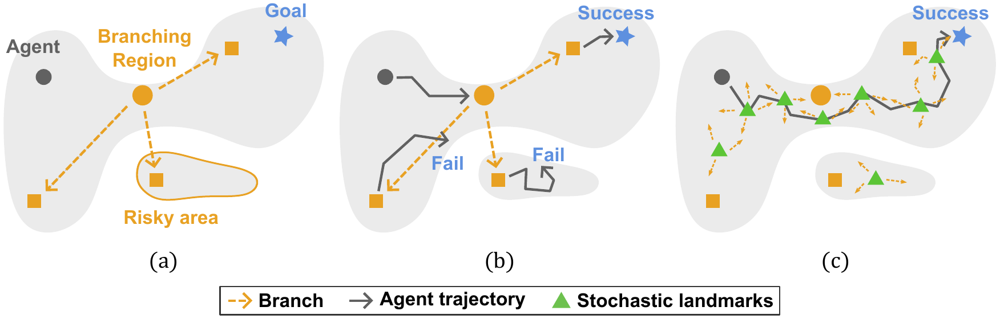
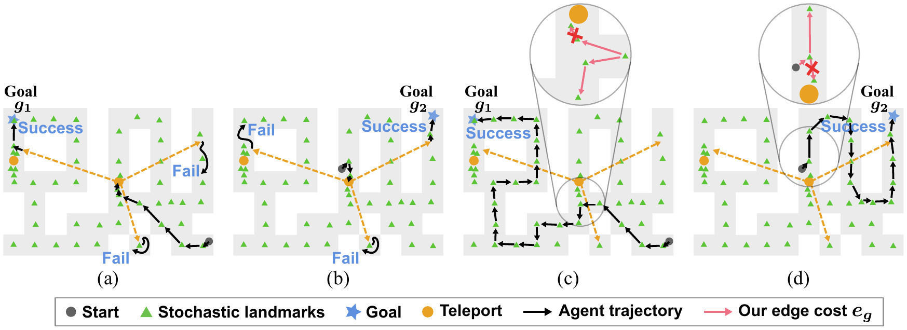
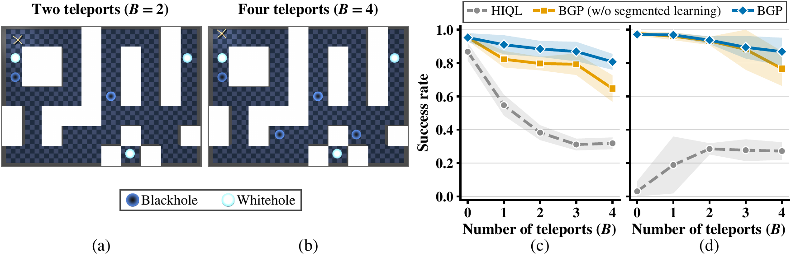

Find the branches.
Estimate multi-step predictive uncertainty and concentrate graph landmarks near high-variability, branching regions of offline trajectories.
NeurIPS 2026 / Offline Goal-Conditioned Reinforcement Learning
Graduate School of Artificial Intelligence, UNIST
Not every promising path is reliable.
BGP plans around stochastic branches to reach distant goals more consistently.
In stochastic environments, apparently successful trajectories may depend on rare, lucky outcomes. Offline learners can mistake these paths for reliable routes, repeatedly entering branching regions that frequently lead to failure. We call this failure mode path mirage.

A transition that appears useful in recorded trajectories can still be risky when the environment has multiple stochastic outcomes.
Identify high-variability states, then evaluate possible downstream outcomes before committing to a waypoint.
BGP builds a goal-conditioned planning graph that treats stochastic branching as a first-class part of long-horizon decision making.
Estimate multi-step predictive uncertainty and concentrate graph landmarks near high-variability, branching regions of offline trajectories.
Construct goal-conditioned edge costs that consider downstream branches. Compose local reachability estimates and plan waypoints with graph search.
Train the policy and value function on trajectory windows bounded by landmark cluster transitions, reducing long-horizon error accumulation.
The result: reliable waypoint planning without treating all data-supported paths as equally trustworthy.
A teleport can lead to different locations, including unreachable dead zones. A local-value edge cost may favor an apparently short route through it; branch-aware edges instead account for downstream reachability and choose a route appropriate for the goal.

BGP is evaluated on state-based and visual maze benchmarks, including challenging navigation, stitching, exploration, and stochastic teleport settings.
Mean success rates reported in Table 1 of the paper; each environment group aggregates its evaluated datasets.
We vary the number of active teleport entrances (blackholes) from 0 to 4. Across navigate and stitch datasets, BGP remains substantially more successful than HIQL as teleport-induced stochasticity increases; segmented learning provides additional stability.

| Antmaze teleport dataset | HIQL | GAS | BGP |
|---|---|---|---|
| Navigate | 42% | 39% | 90% |
| Stitch | 36% | 39% | 92% |
| Explore | 34% | 32% | 93% |
Selected comparison from Table 1. Success rates (%) averaged across five seeds; see the paper for standard deviations and all baselines.
Read the full paper, inspect the experiments, and explore the official implementation.
@inproceedings{bae2026escaping,
title={Escaping Path Mirages in Offline Goal-Conditioned Reinforcement Learning},
author={Bae, Junhyeon and Hwang, Jaebak and Choi, Gwanwoo and Kim, Minung and Han, Seungyul},
booktitle={Advances in Neural Information Processing Systems},
year={2026}
}